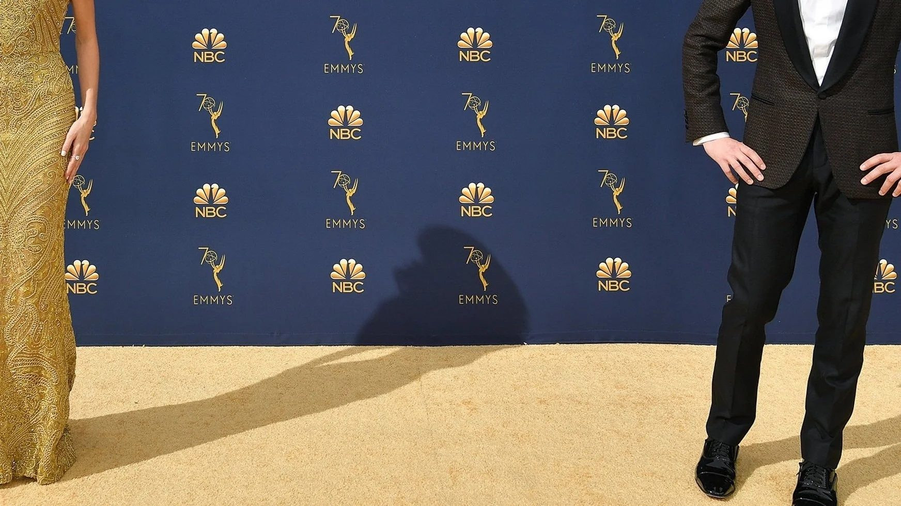
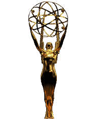

Case study · In-House
Television Academy
Spearheaded design for the Television Academy over 16 years, modernizing the visual brand of the organization behind the Emmy Awards. Directed annual key art, high profile invitation packages, multi-channel ad campaigns, and digital graphics. By combining the Academy's prestige with modern aesthetics, I helped grow membership and reposition this historic institution for a digital-first audience.

The Emmy Awards risked feeling like a stagnant legacy institution. Growing the Academy meant modernizing the identity for a younger audience, without losing the credibility the brand had built over decades.
As Art Director and second in command, I ran daily creative operations, bridging leadership, external vendors, and network partners across the in-house design team, ceremony design, and every media campaign.
For the 70th anniversary, the full design department and an outside agency worked on concepts for a special logo. The logo I designed was chosen to run year-round on everything from billboards and stationery to trade ads, digital graphics, and the Governors Ball hamburger boxes. It reached over 10 million people.
Invitations for Emmy-related events: the LA Area Emmy Awards, the Performers Nominee Reception, and the Emmy Awards show itself.
Invitation package for the 73rd Emmy Awards: four color-coded invitations and nine RSVP cards, printed on soft-touch paper with reflective foils only, in gold, red, blue, and purple.
Key art for Television Academy events, from the annual College Television Awards to "Evenings With" events featuring the cast of popular shows.
Logos designed for various Television Academy and Television Academy Foundation programs, initiatives, and awards.
Print and digital campaigns for the Emmy telecast ran in People, The Hollywood Reporter, and Variety. Key art was adapted across trade ads, banner ads, and social assets, and I managed the media budget and partner placements.
Sixteen years of art direction kept the Academy at the gold standard of the industry through a period of aggressive membership growth: 257%, from 7,000 to over 25,000 members. Ceremonies and campaigns reached millions of viewers every year.
In 2026, I returned as a consultant on specialty projects, advising on brand guidelines for the Academy’s Televerse Festival and helping design logistics materials for Emmy season.
